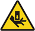

Operating Documentation
Direction 5181178-800, Rev# 16
Module Version 1.0, Version Date 2/16/07
Operating Documentation |
| ||||
| Use the DAS Debris Shields to prevent metal shaving from contaminating
the DAS Chassis. These shields can be used with the DAS fans running. Remove
debris shields before rotating the gantry. See Illustration 1. The weights for gantry balance are installed at two locations-at 78 and 180 degrees. Illustration 2 shows the 78-degree weights. | ||||
| ||||
| The order from back to front of the specific balance weights is shown
in Illustration 5. The balance program
will determine the number of each specific weight. The physical order from
front to back is critical and cannot be altered. A quantity of 0 (zero) is
a valid number for specific weights. Each specific weight is defined by its
base metal, generic name, location angle and thickness in mm. Example:
| ||||
Read and observe the Notices above, where required.
Position the table to its lowest position.
Remove the gantry side, top, front and rear covers.
Launch the Service Gantry Balance program from the Service Desktop, Diagnostics tab.
Select Run to start the gantry balance procedure.
If the sensitivity matrix does not exist or the gantry is out of balance, the program will ask you to enter the current weight configuration prior to performing the steps to generate a new sensitivity matrix. See Illustration 7 for example of entries for 78° weight stack. The 180° weight stack appears in the similar manner.
Follow the steps as stated in the "Result" portion of the GUI screen as you proceed through the Gantry Balance procedure. Those steps will not be included here as they may change from release to release of the product.
When the Gantry Balance procedure indicates a passing result save the updated configuration information and exit the program.
 |
| |||
| Impact Hazard. | ||||
| Failure to Torque trim weight fastening hardware will result in damaging projectile events that will result in severe equipment damage and possible personal injury. | ||||
| Torque all fasteners to proper levels. |
| NOTE: | Refer to "Gantry Service Balance Theory" for explanation regarding torque as it applies to this area. |
Make sure to torque all fasteners as instructed.
Assemble gantry.
Perform FASTCAL and ensure no pop-up windows occur and gesyslog is error free.